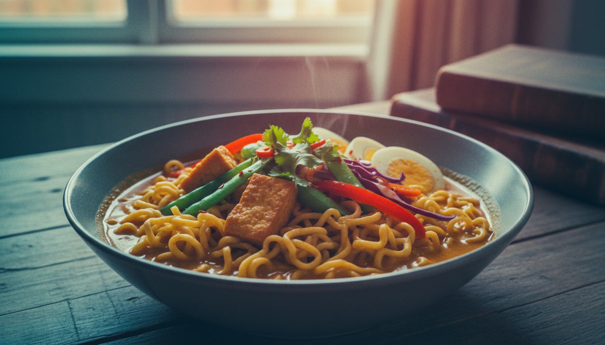

Curry Noodles is a flavorful noodle dish made with curry seasoning, vegetables, tofu, and eggs cooked together in a savory broth. The noodles absorb the curry sauce and become rich, warm, and comforting. This dish works well for busy days because it uses simple ingredients while still giving a full and enjoyable taste.
It also carries a satisfying blend of textures that make it enjoyable in every bite. The crisp tofu contrasts with the soft noodles while the pechay adds freshness that brightens the dish. The curry flavor pulls everything together and creates a warm and inviting aroma that feels perfect for a comforting meal at home.
Heat cooking oil in a wok. Fry the tofu until it becomes golden and crisp. Remove from the wok and set aside.
Use a small amount of the remaining oil. Pour in the beaten eggs and cook until firm. Remove from the wok and set aside.
Add a little oil to the wok. Sauté garlic, onion, and tomato until the tomato softens and releases its aroma.
Add the fried tofu and chopped pechay. Stir in the oyster sauce and cook for one minute.
Pour in water and let it boil. Add the Maggi Kari seasoning packet and mix well.
Place the noodles into the wok. Cook for about three minutes while stirring so the flavor spreads evenly.
Combine water and cornstarch in a small bowl. Pour the mixture into the wok and cook until the sauce thickens.
Add salt and ground black pepper. Mix everything together until coated well and transfer to a serving dish.